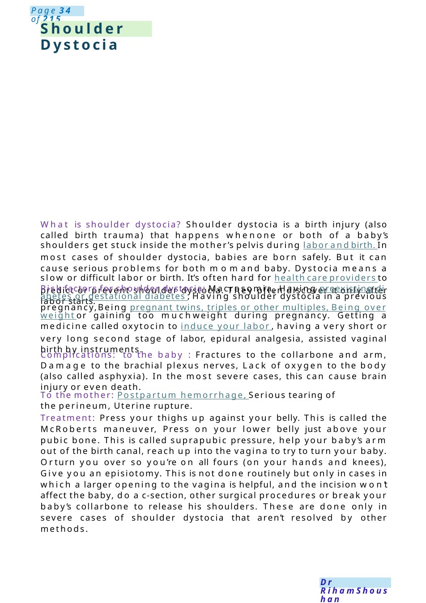
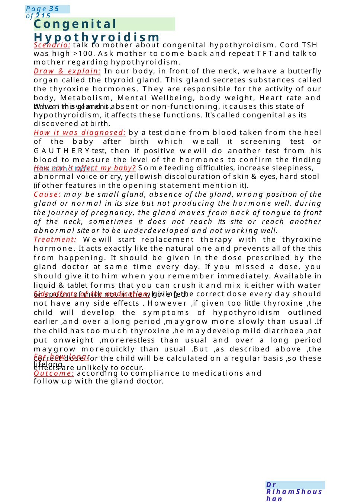

Shoulder Dystocia
What is shoulder dystocia? Shoulder dystocia is a birth injury (also called birth trauma) that happens whenone or both of a baby’s shoulders get stuck inside the mother’s pelvis during labor and birth. In most cases of shoulder dystocia, babies are born safely. But it can cause serious problems for both momand baby. Dystocia means a slow or difficult labor or birth. It’s often hard for health care providers to predict or prevent shoulder dystocia. They often discover it only after labor starts. Risk factors for shoulder dystocia: Macrosomia, Having preexisting diabetes or gestational diabetes , Having shoulder dy…
Scenario Summary
What is shoulder dystocia? Shoulder dystocia is a birth injury (also called birth trauma) that happens whenone or both of a baby’s shoulders get stuck inside the mother’s pelvis during labor and birth. In most cases of shoulder dystocia, babies are born safely. But it can cause serious problems for both momand baby. Dystocia means a slow or difficult labor or birth. It’s often hard for health care providers to predict or prevent shoulder dystocia. They often discover it only after labor starts. Risk factors for shoulder dystocia: Macrosomia, Having preexisting diabetes or gestational diabetes , Having shoulder dy…
Full Original Scenario

Shoulder Dystocia
What is shoulder dystocia? Shoulder dystocia is a birth injury (also called birth trauma) that happens whenone or both of a baby’s shoulders get stuck inside the mother’s pelvis during labor and birth. In most cases of shoulder dystocia, babies are born safely. But it can cause serious problems for both momand baby. Dystocia means a slow or difficult labor or birth. It’s often hard for health care providers to predict or prevent shoulder dystocia. They often discover it only after labor starts.
Risk factors for shoulder dystocia: Macrosomia, Having preexisting diabetes or gestational diabetes , Having shoulder dystocia in a previous pregnancy,Being pregnant twins, triples or other multiples, Being overweight or gaining too muchweight during pregnancy. Getting a medicine called oxytocin to induce your labor , having a very short or very long second stage of labor, epidural analgesia, assisted vaginal birth by instruments.
Complications: to the baby : Fractures to the collarbone and arm, Damage to the brachial plexus nerves, Lack of oxygen to the body (also called asphyxia). In the most severe cases, this can cause brain injury or even death.
To the mother: Postpartum hemorrhage, Serious tearing of the perineum, Uterine rupture.
Treatment: Press your thighs up against your belly. This is called the Mc Roberts maneuver, Press on your lower belly just above your pubic bone. This is called suprapubic pressure, help your baby’s arm out of the birth canal, reach up into the vagina to try to turn your baby. Orturn you over so you’re on all fours (on your hands and knees), Give you an episiotomy. This is not done routinely but only in cases in which a larger opening to the vagina is helpful, and the incision won’t affect the baby, do a c-section, other surgical procedures or break your baby’s collarbone to release his shoulders. These are done only in severe cases of shoulder dystocia that aren’t resolved by other methods.

Congenital Hypothyroidism
Scenario: talk to mother about congenital hypothyroidism. Cord TSH was high >100. Ask mother to come back and repeat TFTand talk to mother regarding hypothyroidism.
Draw & explain: In our body, in front of the neck, wehave a butterfly organ called the thyroid gland. This gland secretes substances called the thyroxine hormones. They are responsible for the activity of our body, Metabolism, Mental Wellbeing, body weight, Heart rate and bowel movement.
Whenthis gland is absent or non-functioning, it causes this state of hypothyroidism, it affects these functions. It's called congenital as its discovered at birth.
How it was diagnosed: by a test done from blood taken from the heel of the baby after birth which wecall it screening test or GAUTHERYtest, then if positive wewill do another test from his blood to measure the level of the hormones to confirm the finding (this is the task).
How can it affect my baby? Somefeeding difficulties, increase sleepiness, abnormal voice or cry, yellowish discolouration of skin &eyes, hard stool (if other features in the opening statement mention it).
Cause: may be small gland, absence of the gland, wrong position of the gland or normal in its size but not producing the hormone well. during the journey of pregnancy, the gland moves from back of tongue to front of the neck, sometimes it does not reach its site or reach another abnormal site or to be underdeveloped and not working well.
Treatment: Wewill start replacement therapy with the thyroxine hormone. It acts exactly like the natural one and prevents all of the this from happening. It should be given in the dose prescribed by the gland doctor at same time every day. If you missed a dose, you should give it to him when you remember immediately. Available in liquid &tablet forms that you can crush it and mix it either with water or spoon of milk not in the whole fed.
Side effects of the medication: giving the correct dose every day should not have any side effects . However ,if given too little thyroxine ,the child will develop the symptoms of hypothyroidism outlined earlier ,and over a long period ,maygrow more slowly than usual .If the child has too much thyroxine ,he maydevelop mild diarrhoea ,not put onweight ,morerestless than usual and over a long period maygrow morequickly than usual .But ,as described above ,the correct dose for the child will be calculated on a regular basis ,so these effects are unlikely to occur.
For how long: lifelong.